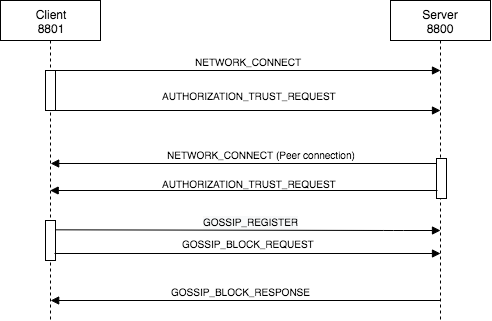

This is based on Sawtooth 1.0.5 source code for Gossip and static peering.

%load_ext autoreload
%autoreload 2
import logging
logger = logging.getLogger()
logger.setLevel(logging.DEBUG)
logging.info("Starting")
from sawtooth_validator.networking.handlers import PingHandler
from sawtooth_validator.journal.responder import ResponderBlockResponseHandler
from sawtooth_validator.journal.responder import BlockResponderHandler
from sawtooth_validator.state.settings_cache import SettingsCache
from sawtooth_validator.gossip.gossip_handlers import PeerRegisterHandler
from sawtooth_validator.networking.handlers import ConnectHandler
from sawtooth_validator.server.keys import load_identity_signer
from sawtooth_validator.concurrent.threadpool import InstrumentedThreadPoolExecutor
from sawtooth_validator.networking.handlers import AuthorizationTrustRequestHandler
from sawtooth_validator.gossip.permission_verifier import PermissionVerifier
from sawtooth_validator.journal.block_store import BlockStore
from sawtooth_validator.journal.completer import Completer
from sawtooth_validator.database.indexed_database import IndexedDatabase
from sawtooth_validator.journal.responder import Responder
from sawtooth_validator.protobuf import block_pb2
from sawtooth_validator.protobuf import validator_pb2
from sawtooth_validator.networking.dispatch import Dispatcher
from sawtooth_validator.networking.interconnect import Interconnect
from sawtooth_validator.gossip.gossip import Gossip
class MockSettingsViewFactory(object):
def __init__(self):
self.settings = {}
def create_settings_view(self, root):
return MockSettingsView(self.settings)
def add_setting(self, setting, value):
self.settings[setting] = value
class MockSettingsView(object):
def __init__(self, settings):
self.settings = settings
def get_setting(self, setting):
return self.settings.get(setting)
class Responder():
def __init__(self, completer):
pass
def get_request(self, block_id):
return None
def check_for_block(self, block_id):
class Block():
def get_block(self):
return block_pb2.Block()
return Block()
def validator_factory(endpoint="tcp://127.0.0.1:8800", initial_peer_endpoints=[]):
""" Start a new validator and requests for Gossip entering """
signer = load_identity_signer(
key_dir="/Users/amimknabben/.projects/sawtooth-core/keys",
key_name='validator'
)
network_dispatcher = Dispatcher()
network_service = Interconnect(
endpoint,
public_endpoint=endpoint,
dispatcher=network_dispatcher,
signer=signer,
authorize=True
)
gossip = Gossip(
network_service,
SettingsCache(MockSettingsViewFactory()),
lambda: None,
lambda: "",
endpoint=endpoint,
initial_peer_endpoints=initial_peer_endpoints
)
gossip.start()
network_thread_pool = InstrumentedThreadPoolExecutor(max_workers=10, name='Network')
# Add handlers - threads incoming messages
network_dispatcher.add_handler(
validator_pb2.Message.PING_REQUEST,
PingHandler(network=network_service),
network_thread_pool)
network_dispatcher.add_handler(
validator_pb2.Message.NETWORK_CONNECT,
ConnectHandler(network=network_service),
network_thread_pool)
network_dispatcher.add_handler(
validator_pb2.Message.AUTHORIZATION_TRUST_REQUEST,
AuthorizationTrustRequestHandler(
network=network_service,
permission_verifier=PermissionVerifier(None, lambda: '',None),
gossip=gossip),
network_thread_pool)
network_dispatcher.add_handler(
validator_pb2.Message.GOSSIP_REGISTER,
PeerRegisterHandler(gossip=gossip),
network_thread_pool)
# Fake BlockResponderHandler
responder = Responder(None)
network_dispatcher.add_handler(
validator_pb2.Message.GOSSIP_BLOCK_REQUEST,
BlockResponderHandler(responder, gossip),
network_thread_pool)
network_dispatcher.add_handler(
validator_pb2.Message.GOSSIP_BLOCK_RESPONSE,
ResponderBlockResponseHandler(responder, gossip),
network_thread_pool)
# Start services
network_dispatcher.start()
network_service.start()To start the gossip network we have two nodes 8800 without any peer and the second 8801 using 8800 as peer,
# Gossip Peer 1 - ROUTER "server" - 8800
validator_factory("tcp://127.0.0.1:8800",initial_peer_endpoints=[])
# Gossip Peer 2 - DEALER "client" - 8801
validator_factory("tcp://127.0.0.1:8801",initial_peer_endpoints=["tcp://127.0.0.1:8800"])